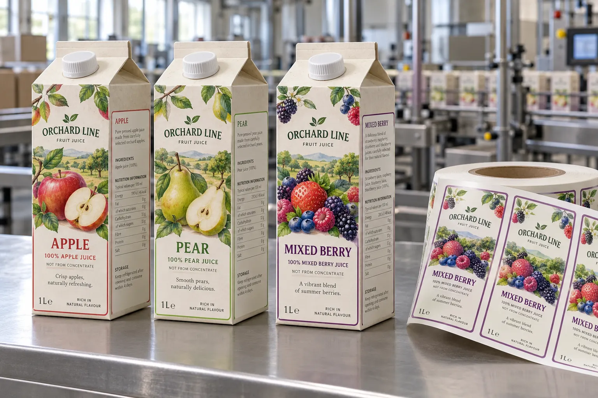

Start with the carton supplier's keyline
A flat paperboard blank offers a lot of apparent space. The filled carton offers less. Scores, sealed seams, cap positions and corner folds decide where an added pressure-sensitive label can sit. SIG's carton design guidance specifically works from format keylines that show cut and crease lines and text areas. That guidance concerns direct-printed cartons, but the same physical geometry is a useful first check before proposing an additional adhesive label.
I would also ask why a label is being added. For a limited launch on an approved stock carton, it can differentiate flavors. For sustained volume, direct-printing the carton may reduce an application step. That is a procurement comparison, not a rule that one method always wins.
Three flavors, one composite carton family
Imagine a composite juice brand testing apple, pear and mixed berry in one-liter stock cartons. The common blank reduces the need to hold three printed carton inventories, but the front labels must fit the real flat panel on every format. If a side cap or top fold moves between suppliers, I would re-measure; I would not carry the old die forward just because the nominal volume matches.
A second composite co-packer labels after filling. Its line runs fast enough that a broad front label can skew at the carton seam. I would trial a narrower panel label on the actual applicator. The better design may leave more of the base carton visible and still make the flavor easier to find.
Approve normal use and scanning
Apply labels to filled, erected cartons at the actual line speed. Inspect the front after case packing, opening and pouring. Keep variable codes and barcodes off fold lines and panels that are hidden in a tray. Confirm whether the carton supplier permits the added construction and whether recycling instructions or mandatory product information need review in the destination market.
| Area | Question |
|---|---|
| Flat panel | Is the label fully supported? |
| Top and cap | Can the customer still open and pour? |
| Side seam | Will the label bridge a moving edge? |
| Barcode | Can the finished pack scan? |
Our buying view
Do not force a sticker to replace carton engineering
I would use a well-positioned label to separate short-run variants. I would not use it to cover an opening, repair a wrong carton dieline or avoid asking when a printed carton becomes the more sensible option.
Send the assembled pack
- Filled and erected carton in every size.
- Supplier keyline and opening/cap details.
- Label application point and line speed.
- Flavor artworks, code fields and run quantities.
Read stock packaging versus printed packaging and barcode placement before final artwork approval.
Frequently asked questions
Can I apply a label across a carton fold?
It should not be assumed. A fold can stress the face and adhesive and obscure information; test the erected filled carton.
Are adhesive labels always better than printed cartons for short runs?
No. Compare stock-carton availability, label application labor, SKU count and the printer or carton supplier minimums.
Can one label fit several carton volumes?
Only after each finished format is measured, including cap, seams, fold lines and barcode area.
Related buyer guides
Review your label specification
Send package photos, label dimensions, material details, quantity and application conditions. Include good and failed samples where possible so the discussion starts with evidence.